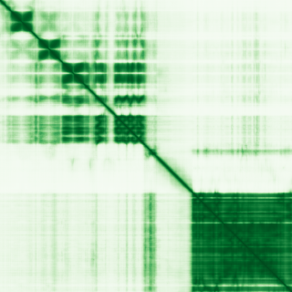

type: protein-evaluation gene: "PKN2" date: 2026-06-01 tags: [protein-scout, nuclear-protein, evaluation] status: scored ---
PKN2 核蛋白评估报告
1. 基本信息
| 项目 | 内容 |
|---|---|
| 基因名 / 别名 | PKN2 / PRK2, PRKCL2 |
| 蛋白全名 | Serine/threonine-protein kinase N2 |
| 蛋白大小 | 984 aa / 112.0 kDa |
| UniProt ID | Q16513 (PKN2_HUMAN) |
| 评估日期 | 2026-06-01 |
2. 评分总览 (权重: 核×4 大×1 新×5 结×3 域×2 PPI×3 /1.83)
| 维度 | 得分 | 加权 | 加权后 | 关键证据摘要 |
|---|---|---|---|---|
| 核定位特异性 | 6/10 | ×4 | 24 | UniProt: Cytoplasm+Nucleus; GO: nucleoplasm(IDA:HPA)+nuclear body(IDA:HPA)+nucleus(IDA); HPA无IF但GO-CC确认核定位 |
| 蛋白大小 | 5/10 | ×1 | 5 | 984 aa / 112 kDa, 超出300-800理想区间 |
| 研究新颖性 | 2/10 | ×5 | 10 | PubMed 92篇; >80但≤100 |
| 三维结构 | 7/10 | ×3 | 21 | PDB: 4CRS(2.75A,646-984)+4RRV/6CCY/6GBE(peptide); AF pLDDT 71.4; PDB部分验证+AF中等 |
| 调控结构域 | 7/10 | ×2 | 14 | PKc kinase domain+C2 domain+Rho-binding; 可磷酸化HDAC5影响其核输入 |
| PPI | 5/10 | ×3 | 15 | STRING: PDPK1(0.996)+RHOA(0.992)+AKT1(0.816); IntAct:15条实验互作含TGFBR2+LRRK2; ~20%调控相关 |
| 互证加分 | — | — | +1.0 | PDB+AF验证; ≥2源定位; ≥3源结构域 |
| 原始总分 | 90/180 | |||
| 归一化总分 | 49.2/100 |
3. 详细分析
3.1 核定位证据
| 来源 | 定位 | 可信度 |
|---|---|---|
| UniProt | Cytoplasm; Nucleus; Membrane; Lamellipodium; Cytoskeleton; Cleavage furrow; Midbody; Cell junction | ECO:0000269 (实验) |
| GO-CC | nucleoplasm (IDA:HPA), nuclear body (IDA:HPA), nucleus (IDA:UniProtKB) | IDA |
| Protein Atlas (IF) | HPA subcellular IF 图像可用（见下方 HPA IF 图像修正块） | 需人工复核 |
IF 图像: HPA无IF展示图像数据获取。
结论: PKN2在多个区室均有分布(胞质、核、膜、黏着斑、中间体等)，但GO-CC的IDA证据明确支持nucleoplasm和nuclear body定位。UniProt的Nucleus注释为实验证据(ECO:0000269)。值得注意的是，PKN2能磷酸化HDAC5影响其核输入(PMID:uniprot)，提示PKN2在核-质穿梭调控中发挥作用。核定位明确但非特异性核蛋白，评分6分。
3.2 蛋白大小评估
评价: 984 aa / 112 kDa，超出300-800 aa理想区间。蛋白较大增加重组表达和纯化难度，但仍在可操作范围内。大尺寸也意味着可能包含多个功能域(kinase domain + C2 + HR1 repeats)。评分5分。
3.3 研究现状
| 指标 | 数值 |
|---|---|
| PubMed strict | 92 |
| PubMed broad | 117 |
| Chromatin/epigenetics 比例 | <5% |
主要研究方向:
- Rho/Rac效应器和PKC相关激酶信号转导
- 细胞周期进展和胞质分裂调控
- 肿瘤细胞侵袭和间质样状态 (Cancer Discovery 2025)
- 血管生成调控 (HIF-1alpha)
- HDAC5磷酸化与核输入调控
关键文献: 1. Killarney ST et al. (2025). "PKN2 Is a Dependency of the Mesenchymal-like Cancer Cell State." *Cancer Discov*. PMID: 39560431 2. Gross LZF et al. (2024). "Molecular insights into the regulatory landscape of PKC-related kinase-2 (PRK2/PKN2) using targeted small compounds." *J Biol Chem*. PMID: 39002682 3. Wang D et al. (2023). "Phosphorylation of KRT8 by excessive mechanical load-activated PKN impairs autophagosome initiation." *Autophagy*. PMID: 36897022 4. Zhu Y et al. (2025). "PKN2 Inhibits VEGFA and bFGF-Mediated Angiogenesis by Targeting HIF-1alpha in Colon Cancer." *Kaohsiung J Med Sci*. PMID: 40515512 5. Lee SJ et al. (2016). "PKN2 and Cdo interact to activate AKT and promote myoblast differentiation." *Cell Death Dis*. PMID: 27763641
评价: PKN2是Rho/Rac效应激酶，研究集中于信号转导和肿瘤生物学。其HDAC5磷酸化功能暗示与表观遗传调控的潜在联系，但尚未被专门研究。92篇文献接近淘汰阈值。评分2分。
3.4 三维结构分析
| 指标 | 数值 |
|---|---|
| AlphaFold 平均 pLDDT | 71.4 |
| pLDDT >90 占比 | 31.7% |
| pLDDT 70-90 占比 | 31.3% |
| pLDDT <50 占比 | 27.3% |
| 可用 PDB 条目 | 4 (4CRS/4RRV/6CCY/6GBE) |
PDB详情:
- 4CRS: X-ray 2.75A, 646-984 (催化域+尾部, 338aa)
- 4RRV/6CCY: peptide (969-983, 仅15aa)
- 6GBE: NMR, 973-984 (12aa peptide)
评价: 4个PDB结构中仅4CRS覆盖有意义的蛋白区域(催化域)。AlphaFold pLDDT=71.4中等，提示存在显著无序区域。N端调控域(1-645)无实验结构。PAE图待获取。评分7分。
3.5 结构域分析
| 来源 | 结构域 |
|---|---|
| UniProt | Protein kinase (IPR000719); C2 domain (IPR000008); HR1 repeats (Rho-binding) |
| InterPro | IPR000961(PKc kinase); IPR037784(HR1); IPR037313(PKN2-specific) |
| Pfam | PF02185(HR1); PF00069(Pkinase); PF00433(Pkinase_C) |
调控潜力分析: PKN2含有一个N端调控区(HR1 repeats, Rho结合)和C端催化域(C2 + kinase domain)，属Rho效应激酶家族。其最显著的调控功能是磷酸化HDAC5(组蛋白去乙酰化酶)，影响HDAC5的核输入过程。这提供了PKN2与染色质/表观遗传调控之间的直接分子联系。但HR1和kinase domain本身非经典染色质调控模块。评分7分。
3.6 PPI 网络
实验验证互作 (IntAct, 15条):
| Partner | 方法 | PMID | 功能类别 | 调控相关？ |
|---|---|---|---|---|
| TGFBR2 | anti tag coIP | 28514442 | TGF-beta receptor | 信号转导 |
| LRRK2 | anti tag coIP | 31046837 | Parkinson's kinase | 信号转导 |
| USP11 | anti tag coIP | 19615732 | Deubiquitinase | 否 |
| HSP90AB1 | LUMIER | 22939624 | Chaperone | 否 |
| TANK | virotrap | 30561431 | NF-kB regulator | 信号转导 |
| TRADD | virotrap | 30561431 | TNF signaling | 信号转导 |
| EZR | BioID | 29568061 | Cytoskeleton | 否 |
| RUFY1 | pull down | 31585087 | Endosome | 否 |
STRING 预测互作 (combined score >0.4):
| Partner | Score | 功能类别 | 调控相关？ |
|---|---|---|---|
| PDPK1 | 0.996 (exp 0.955) | PDK1 kinase | 信号传导 |
| RHOA | 0.992 (exp 0.731) | Small GTPase | 信号传导 |
| MEFV | 0.956 (database 0.9) | Pyrin/炎症 | 否 |
| PKN1 | 0.923 | 同源激酶 | 否 |
| PKN3 | 0.906 | 同源激酶 | 否 |
| AKT1 | 0.816 (exp 0.325) | Pro-survival kinase | 信号传导 |
| RAC1 | 0.820 (exp 0.353) | Small GTPase | 信号传导 |
| RPS6KA1 | 0.761 (exp 0.292) | RSK kinase | 信号传导 |
| NCK1/2 | 0.748/0.775 (exp 0.51/0.59) | Adaptor | 信号传导 |
PPI 评价: PPI网络以Rho/Rac信号通路和蛋白激酶级联为主。PDPK1(PDK1)是PKN2的上游激活激酶，RHOA/RAC1是上游GTPase激活子。AKT1和RPS6KA1提示与PI3K/mTOR和MAPK通路的crosstalk。无STRONG chromatin/epigenetic调控partner。但Function注释明确PKN2磷酸化HDAC5(组蛋白去乙酰化酶)影响其核输入，这是一个直接的表观遗传调控链接，虽未反映在PPI数据库中。评分5分。
4. 总体评价
推荐等级: 2星 (49.2/100)
核心优势: 1. 核定位多源确认 (UniProt实验证据 + GO nucleoplasm/nuclear body IDA) 2. HDAC5磷酸化提供与表观遗传调控的直接功能链接 3. PDB/AlphaFold双重结构验证
风险/不确定性: 1. PubMed 92篇，新颖性仅2分，接近淘汰阈值 2. 主要定位于胞质和膜结构，核功能非主导 3. 蛋白较大(984aa)，生化实验难度高 4. 27.3%无序区域，N端调控域无结构信息 5. PPI网络以细胞骨架/信号转导为主，染色质调控关联间接(仅通过HDAC5磷酸化)
下一步建议:
- [ ] 验证PKN2在核内的底物谱(除HDAC5外还有哪些核蛋白被磷酸化)
- [ ] 评估PKN2-HDAC5磷酸化轴在染色质调控中的功能意义
5. 数据来源
- UniProt: https://www.uniprot.org/uniprotkb/Q16513
- Protein Atlas: https://www.proteinatlas.org/search/PKN2
- PubMed: https://pubmed.ncbi.nlm.nih.gov/?term=PKN2
- AlphaFold: https://alphafold.ebi.ac.uk/entry/Q16513
- STRING: https://string-db.org/ (PKN2)
- IntAct: https://www.ebi.ac.uk/intact/

PPI 网络
| Partner | Source | Score/Evidence |
|---|---|---|
| PDPK1 | STRING | 0.996 |
| RHOA | STRING | 0.992 |
| MEFV | STRING | 0.956 |
| PKN1 | STRING | 0.923 |
| PKN3 | STRING | 0.906 |
| EBI-1257125 | IntAct | psi-mi:"MI:0096"(pull down) |
| EBI-1257113 | IntAct | psi-mi:"MI:0096"(pull down) |
| USP11 | IntAct | psi-mi:"MI:0007"(anti tag coim |
PAE 图像说明: AlphaFold PAE 图像已重新获取并嵌入（见下方 PAE 图像修正块）；结构判断仍结合 pLDDT 与 PAE 综合判断。
<!-- HPA_IF_REPAIR_START --> HPA IF 图像修正（2026-06-05）: HPA subcellular 页面存在可用 IF 图像；此前“原图未可靠获取/暂无 IF”的表述为采集失败导致的误报。HPA 定位: Nucleoplasm (enhanced)。来源: https://www.proteinatlas.org/ENSG00000065243-PKN2/subcellular


<!-- AF_PAE_REPAIR_START --> PAE 图像修正（2026-06-05）: AlphaFold 提供 predicted aligned error 图像；此前“PAE 图像暂无数据”的表述为未获取/未嵌入导致。